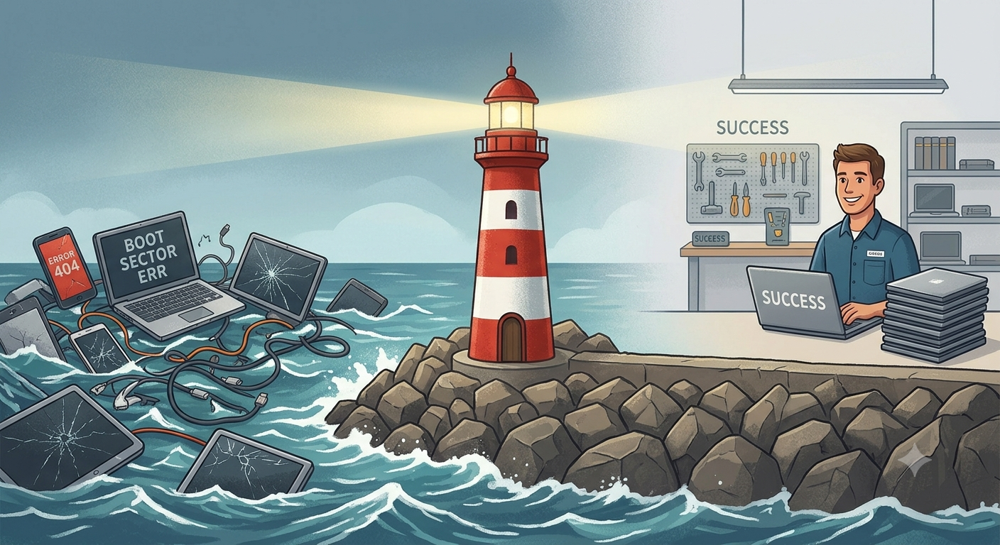
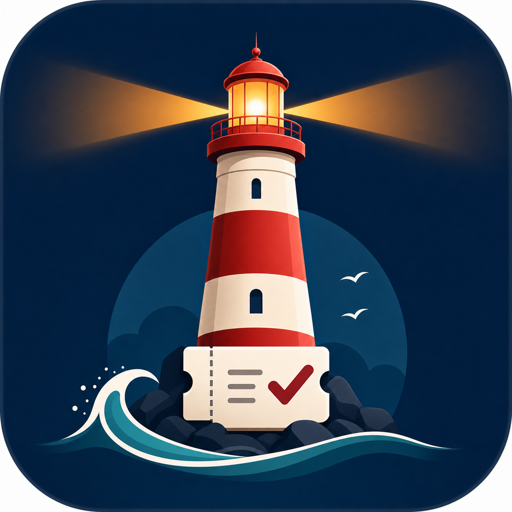
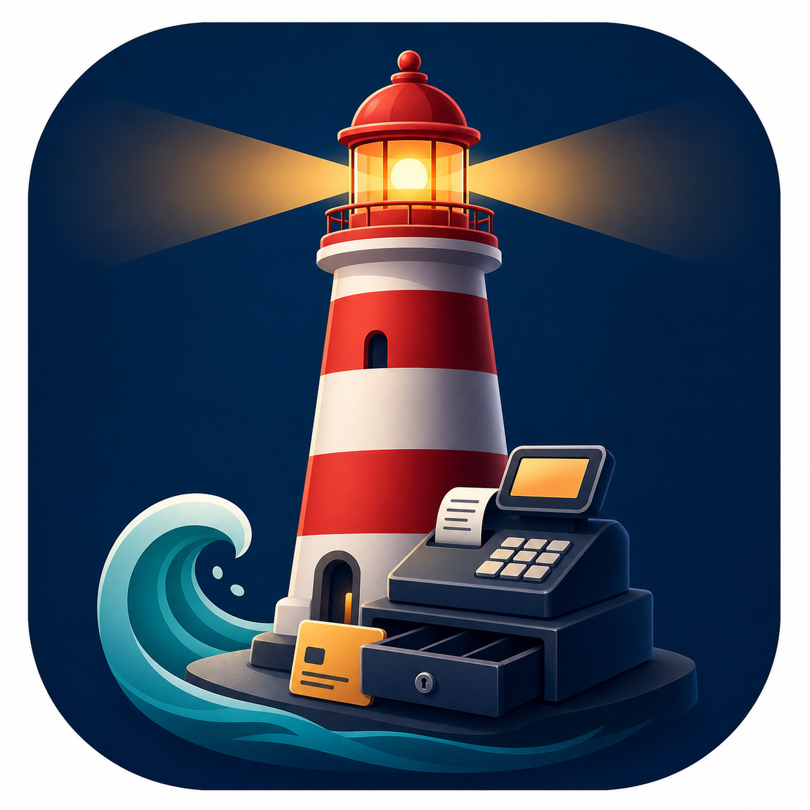
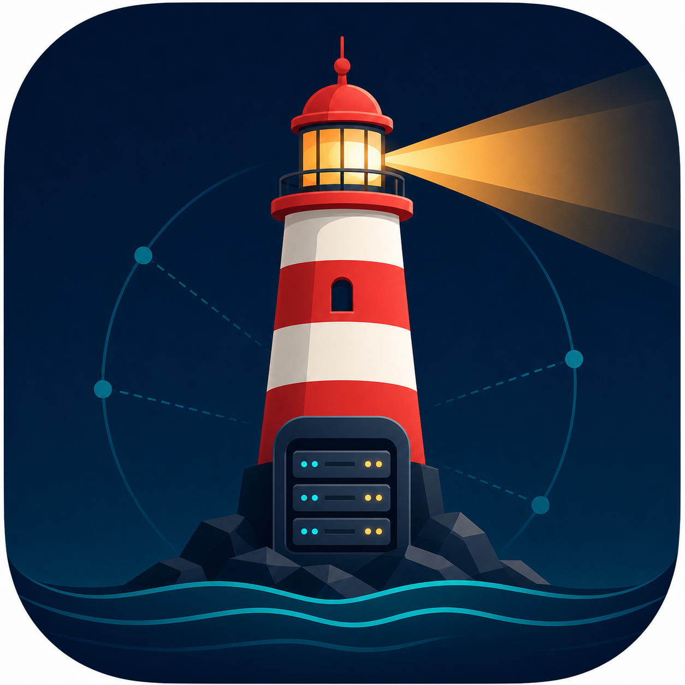
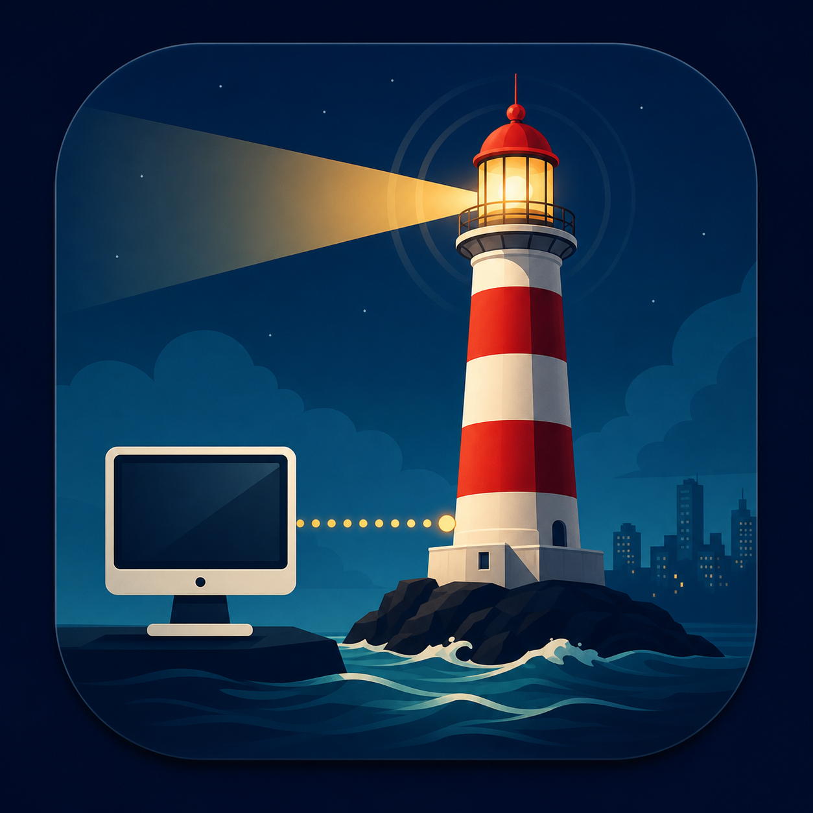

Ordená tickets, caja y entregas de tu servicio técnico en un solo sistema.
FaroDesk centraliza ingresos, presupuestos, estados, comprobantes y caja diaria en una app local, rápida y pensada para talleres que no pueden depender de planillas ni WhatsApp.
- Flujo operativo específico para talleres de reparación y electrónica.
- Módulo de caja separado para controlar anticipos, saldos y cierres diarios.
- Instalación remota incluida, funcionamiento en red local y soporte por WhatsApp.

¿Tu taller sigue funcionando con cuadernos, Excel o WhatsApp?
Trabajar sin orden provoca pérdida de datos, dudas sobre el estado de cada equipo y descontrol en la caja. FaroDesk centraliza tu laboratorio: cada ingreso genera trazabilidad completa, presupuestos claros e historial transparente para tus clientes.
Talleres que necesitan ordenar el mostrador sin complicar al equipo.
FaroDesk está pensado para servicios técnicos de celulares, informática, electrónica, consolas y negocios con recepción, laboratorio y caja trabajando sobre los mismos datos.
Recepción ordenada
Ingreso de clientes, equipos, fallas y comprobantes desde el primer contacto.
Laboratorio trazable
Estados, presupuestos, reparaciones, garantías y alertas por demora.
Caja clara
Anticipos, saldos, devoluciones, recibos y cierre diario sin mezclar áreas.
Red local
Terminales conectadas al mismo servidor para trabajar aun si internet falla.
El camino hacia un taller 100% bajo control
FaroDesk convierte el ingreso de un equipo en un proceso transparente, rápido y libre de errores humanos.
Ingreso seguro
Registrás al cliente por su documento de identidad, asociás marca, modelo y falla. Generás un ticket único y el PDF de ingreso.
Presupuesto claro
El técnico evalúa, carga costos y envía el presupuesto. Todo queda asentado en el historial técnico tanto si acepta como si rechaza.
Reparación alerta
El equipo avanza por estados como En reparación o Listo. Si un ticket se demora más de lo configurado, salta una alerta visual.
Entrega y caja
Registrás el trabajo realizado y los días de garantía. Se genera el movimiento automático en caja para liquidar la cuenta.

Gestión de tickets e historial técnico
Cada equipo entra con un código único asociado a su sucursal o técnico. Registrá datos de cliente por su documento de identidad, marcas, modelos y la descripción exacta de la falla. El sistema documenta cambios de estado, envío de presupuestos y días de garantía para evitar cualquier tipo de discusión interna o con el cliente.

Una caja blindada. Cuentas claras todos los días.
En un negocio real, mezclar el laboratorio técnico con el manejo del dinero es un peligro. FaroDesk separa por completo la pantalla de los técnicos del módulo de caja diaria.
- Control de anticipos y saldos: sabé cuánto dejó el cliente a cuenta y cuánto resta cobrar.
- Neto del día automático: reportes limpios con cobrados, devoluciones y total neto real.
- Recibos a un clic: emití comprobantes en PDF y envíalos directo por WhatsApp en el acto.
Olvidate de depender de internet. Tu servidor, tus datos.
Muchos sistemas web te bloquean si te quedas sin conexión en el local. FaroDesk corre de forma interna.

Gateway / servidor central
Centraliza los datos en una base PostgreSQL detrás del gateway. Máxima protección local para que el negocio nunca se detenga.

Terminales en red
Conecta la recepción, las computadoras del laboratorio y la caja a la misma red local. Datos centralizados, estables y siempre sincronizados.
Preguntas frecuentes
¿Cómo funciona la prueba gratuita de 7 días?
Completás el formulario de contacto con los datos de tu negocio y nos comunicamos con vos para coordinar una instalación remota. Te configuramos el sistema completo en tu servidor local para que puedas usar todas las funciones sin restricciones durante 7 días.
¿Qué pasa si me quedo sin internet en el local?
Al ser un sistema que corre en una PC servidor dentro de tu propio local, FaroDesk no depende de una conexión a internet para operar el mostrador, la caja o el laboratorio técnico. El sistema seguirá funcionando al 100% de forma interna. Internet solo se utiliza para la validación automática de la licencia comercial.
¿Puedo separar el acceso de los técnicos del área de caja?
Sí, por completo. El sistema cuenta con administración de usuarios y roles (administrador y operadores). Además, viene con accesos directos separados para el módulo de Servicio Técnico (Tickets) y el módulo de Caja, impidiendo interferencias entre áreas.
¿El sistema incluye soporte técnico?
Si. Al contratar el servicio tenés incluido el soporte técnico directo a través de WhatsApp en horario comercial. Te acompañamos tanto en la instalación remota inicial como ante cualquier duda operativa diaria.
Solicitá tu prueba de 7 días
Completá el formulario. Nos encargamos de la instalación remota y la puesta en marcha de FaroDesk.
Instalación remota
Funciones completas
Soporte inicial
La solidez y la guía que tu mostrador necesita
El nombre FaroDesk evoca las raíces de su desarrollo en la costa, buscando referenciar la solidez, la guía y la estabilidad que un faro representa para los navegantes, aplicándolo de forma directa al rumbo operativo y financiero de tu negocio.
Llevamos esa misma filosofía al software de gestión. Sabemos que el día a día de un servicio técnico puede volverse caótico: hojas que se pierden, registros manuales confusos, mensajes desordenados y dudas sobre a quién pertenece cada equipo.
FaroDesk nace para ser esa guía estable en tu negocio. Desarrollamos una herramienta robusta, pensada para las dinámicas del comercio real, que te da la tranquilidad de saber que tus datos están seguros en tu propio servidor local, listos para hacer crecer tu taller.